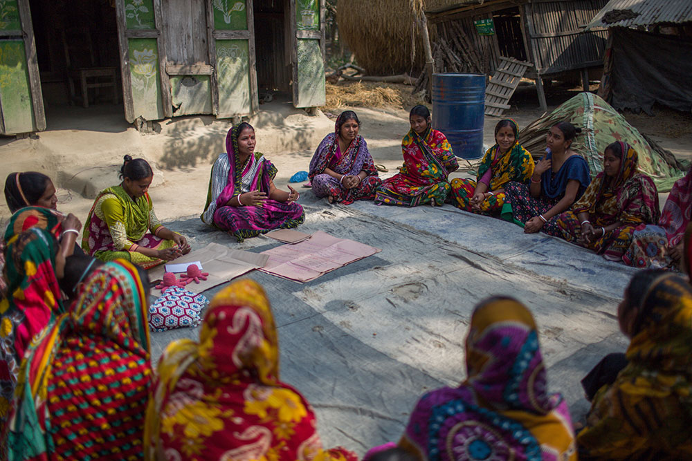
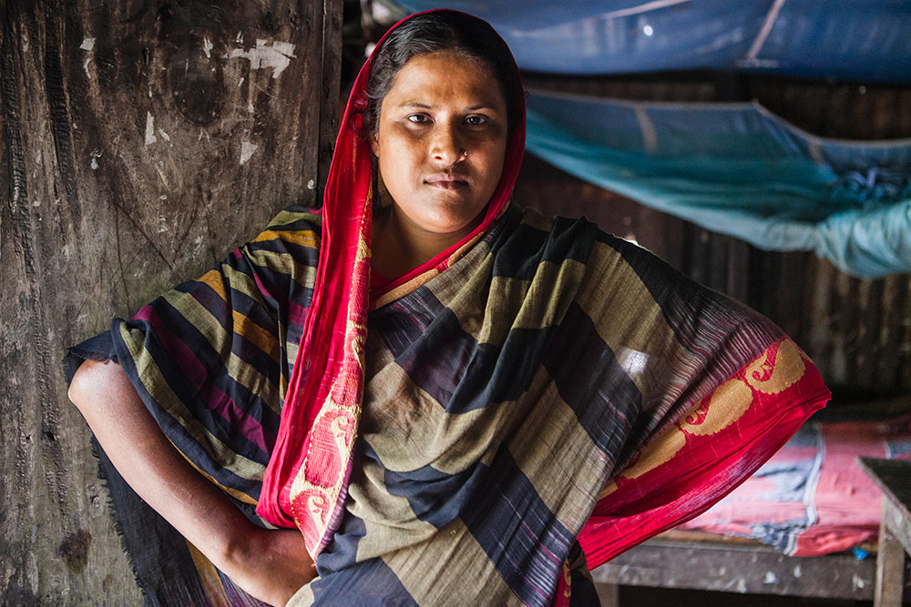
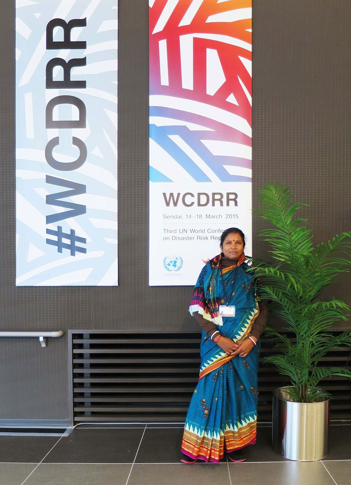
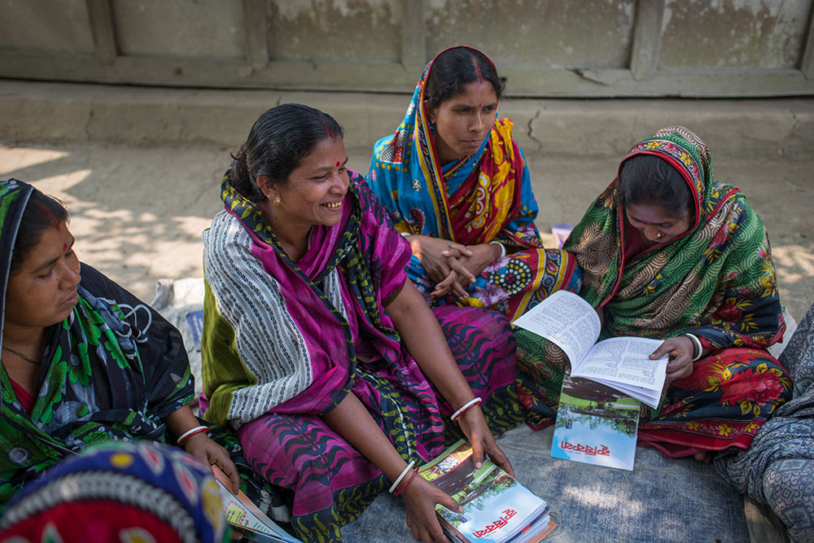
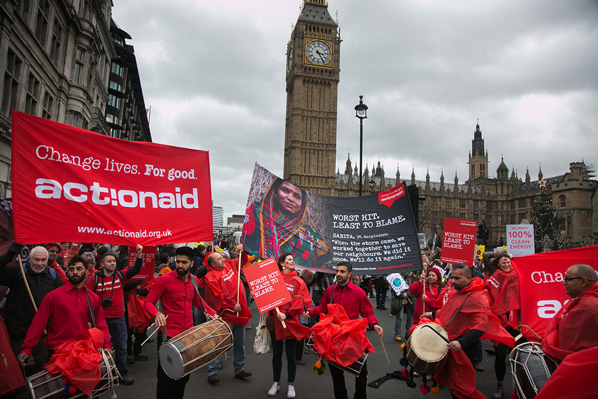

Southern Bangladesh is one of the most disaster prone areas in the world. The area regularly experiences cyclones, tidal surges, coastal erosion and drought.
Climate change impacts have been increasing in recent decades and Kalapara, the coastal area where Sabita Rani lives, is very exposed to all these hazards.
Women in poor coastal communities are the most vulnerable to natural hazards and climate change, expected to care for children and the elderly as well as being responsible for providing food and water for the family. Because of this, women have the most potential to protect their families and communities, and to respond effectively to disasters when given the right support and resources.

Sabita Rani leading the village group.
Photo: Turjoy Chowdhury/ActionAid
But women often have little control over resources or decision making, despite being best placed to know what is needed. Sabita Rani is a living example of how women have challenged this status quo, becoming an influential leader recognised in her own community and in the international efforts to deal with climate change.
Sabita Rani with the embankment group leaders. Photo: Turjoy Chowdhury/ActionAid
“There’s no use being scared; we have to be brave.”
Embankments made of earthworks protect fields and houses from the worst impacts of flooding caused by tidal surges and cyclones. If they fail, seawater can rush in destroying the fertility of the land and demolishing houses.
Many people have been forced to migrate from the coastal areas and in Kalapara over the years the embankments had been allowed to erode and fail. Sabita is at the forefront of the “Embankment Movement” in her village, demanding that local authorities repair these essential defences. When the community received no response, it was the catalyst for them to strengthen their organisation.families. And we know from experience that empowering women can have the most positive impact within communities.
Houses collapsing along broken embankments in Kalapara. Photo: Mahmud/MAP/ActionAid
Sabita has been working with ActionAid’s Women-Led Emergency Response approach and has been trained to lead in disaster response after the devastating Cyclone Mahasen in 2013. Sabita claims that the women’s approach dispels the sense of fear and dependency:
“Men would rush to someone’s house and speak harshly; “You need to go to the shelter now.” This can cause people to get scared and lose courage. We went to people’s houses and explained to them that the storm is coming. We asked; “Will you be able to get to the shelter alone? How can we help you?” This way they felt encouraged and less scared.”
- Sabita.
After the storm, the women led in supporting families to reconstruct their homes.
The approach hasn’t been without challenges however. As Fahima Begum, one of the team that worked with Sabita, recalls:
“When we went to the market asking the price of the materials, most of the shopkeepers were asking why we were there.
Why not our husbands?
Some of them refused to speak to us. But we didn’t give up and finally we successfully completed the market assessment.”
Responding to disasters in their aftermath is crucial at the time, but preparing and building resilience against future emergencies can be even more important. Good planning gives communities the strength to avoid the worst impacts and to be able to recover as quickly as possible.
Hawa Begum a community leader who worked with Sabita in the aftermath of Cyclone Mahasen, and continues to work with her closely on the protection of the embankment. She said of Sabita:
“Sabita Rani’s initiatives during Mahasen were amazing. She made people aware to go to the cyclone centre. She also worked as a head of relief distribution and rehabilitation after Mahasen in the community where she lives, bringing significant positive changes in those affected areas. Sabita helped people to get back to normal life as she worked as a leader in response to the disaster.”

Hawa Begum is a leader in a neighbouring village.
Photo: Mahmud/MAP/ActionAid
“Sabita helped people to get back to normal life as she worked as a leader in response to the disaster.”
- Hawa Begum, Community Leader.

Sabita at the 2015 UN World Conference on Disaster Risk Reduction in Japan
Photo: ActionAid
Creating change, being inspired and inspiring others
Sabita was invited to attend the UN World Conference on Disaster Risk Reduction in Japan, 2015. She has participated in other events with world leaders, including the Minister of Disaster Management and Relief from Bangladesh.
She has demanded adequate funding to protect vulnerable communities as well as the participation of women in decision making. From her experiences, she brought back valuable insights from women of other countries that she has introduced into her work at home.
Sabita Rani at the group created to discuss nutrition with women and children. Photo: Turjoy Chowdhury/ActionAid
As well as her work on disaster risk reduction and response, Sabita has been active in organising women to confront the other big challenges they face in their lives: issues like child marriage, lack of education and income earning opportunities.
She is also helping to build resilience against the impacts of climate change through tree planting and promoting sustainable farming practices.
Sabita became the face of ActionAid’s participation in the People’s Climate March in November 2015, in London just ahead of the Paris climate summit.
“Everybody respects me now. I am creating change! I am so proud of how far I have come and everything I am able to do now.”
- Sabita
Sabita Rani’s work continues, and the need for her in Kalapara (and people like her across the world) will only increase in the near future.

Sabita Rani at a Climate Resilient Sustainable Agriculture meeting.
Photo: Turjoy Chowdhury/ActionAid

The People’s Climate March in London 2015.
Photo: Kristian Buus/ActionAid
Photo: Turjoy Chowdhury/ActionAid
At ActionAid, with your support, we will continue to provide leadership training to women in emergencies and disaster-prone communities. That way we can ensure that women like Sabita Rani have the skills and strength to withstand disasters and to have the political influence to make the changes that are needed.